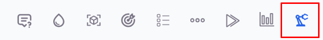
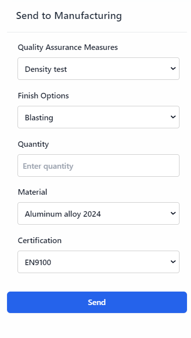
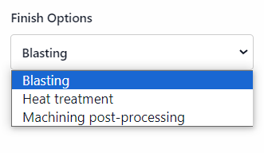
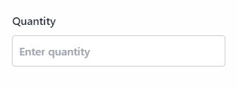
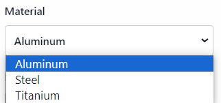
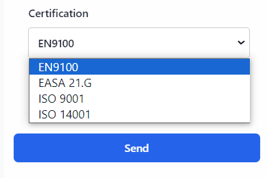

Send to Manufacturing
The "Send to Manufacturing" section is the final step in preparing your 3D modeling project for production. This section allows you to specify various parameters to ensure that your project meets the required standards and specifications. It includes options for quality assurance measures, finishing processes, quantity, material selection, and certification requirements.
Interface Overview
Quality Assurance Measures

Quality assurance is critical in manufacturing to ensure that the produced parts meet the necessary standards and specifications. The available options in this dropdown menu are:
-
Density Test: Measures the density of the material used in the project to ensure it conforms to specified values, which is crucial for applications where material properties like weight and strength are important.
-
Tensile Test: Evaluates the tensile strength of the material, determining the maximum stress the material can withstand while being stretched or pulled before breaking. This is essential for applications where the material will be subjected to tensile forces.
-
Hardness Test: Measures the hardness of the material, indicating its resistance to deformation or scratching. This is important for parts that will experience wear and abrasion.
-
Roughness Measurement: Assesses the surface roughness of the manufactured part, which can affect performance, appearance, and mechanical properties.
-
CT-scan with Surface Analysis: Uses computed tomography (CT) scanning to create a detailed 3D image of the part's internal and external structures. Surface analysis provides information about the part's surface characteristics and any defects.
-
Microsection analysis with protocol: This option involves slicing the material to examine its internal structure under a microscope. It provides details on grain structure and internal defects. Results are documented for quality assurance.
-
incl. target/actual comparison (best fit): This option compares the manufactured part with the design specifications. The "best fit" analysis ensures optimal alignment with the target specifications. It highlights deviations and confirms adherence to design requirements.
Finish Options
Finishing processes improve the appearance, performance, and durability of manufactured parts. The available options in this dropdown menu are:
-
Blasting: Uses a high-pressure stream of abrasive material to clean or finish the surface of the part, removing surface contaminants and providing a uniform finish.
-
Heat Treatment: Involves heating and cooling the material to alter its physical and mechanical properties, improving hardness, strength, and durability.
-
Machining Post Processing: Includes various machining operations such as milling, drilling, and turning to achieve the desired final shape and dimensions, ensuring precision and accuracy in the finished part.
Quantity
Specify the number of units to be manufactured. Enter the desired quantity in the provided field, ensuring it matches your production needs.
Material
Material selection directly affects the performance, durability, and cost of the produced parts. The available options in this dropdown menu are:
-
Aluminum Alloy 2024: Known for its high strength-to-weight ratio, good fatigue resistance, and excellent machinability. Commonly used in aerospace and automotive applications.
-
Tungsten Carbide: A very hard and wear-resistant material used in cutting tools, abrasives, and other applications requiring high hardness and toughness.
-
Titanium Gr.5 3.7164 - Ti6Al4V: A strong and lightweight alloy with excellent corrosion resistance, widely used in aerospace, medical, and marine applications.
-
Inconel (IN718): A nickel-chromium alloy known for its high strength, corrosion resistance, and ability to withstand extreme temperatures. Used in aerospace, chemical processing, and power generation industries.
-
Tool Steel 1.2709: A high-strength steel commonly used for tools, dies, and molds due to its excellent hardness and toughness.
Certification
Certifications ensure that the manufactured parts meet industry standards and regulatory requirements. The available options in this dropdown menu are:
-
EN9100: A quality management system standard for the aerospace industry, ensuring that the manufactured parts meet the stringent requirements of the aerospace sector.
-
EASA 21.G: A certification for design and production organizations in the aerospace sector, ensuring compliance with the European Aviation Safety Agency (EASA) regulations.
-
ISO 9001: A general quality management system standard that ensures the consistency and quality of products and services across various industries.
-
ISO 14001: An environmental management system standard that helps organizations minimize their environmental impact and improve sustainability.
Sending the Project to Manufacturing
After configuring all the options, submit the project for manufacturing by clicking the "Send" button. Before doing so, Before doing so, review all the selected options to ensure accuracy and completeness.